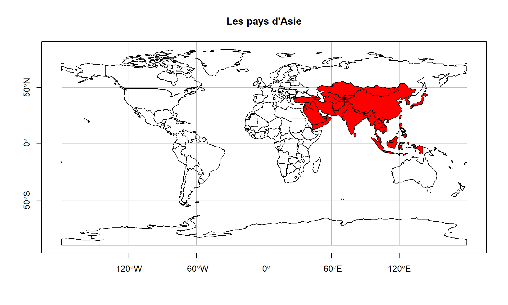

class(world)[1] "sf" "tbl_df" "tbl" "data.frame"dim(world)[1] 177 11names(world) [1] "iso_a2" "name_long" "continent" "region_un" "subregion" "type"
[7] "area_km2" "pop" "lifeExp" "gdpPercap" "geom" Nous allons nous intéresser au jeu de données world présent dans le package spData
class(world)[1] "sf" "tbl_df" "tbl" "data.frame"dim(world)[1] 177 11names(world) [1] "iso_a2" "name_long" "continent" "region_un" "subregion" "type"
[7] "area_km2" "pop" "lifeExp" "gdpPercap" "geom" Il s’agit bien d’un objet de type dataframe composé de 177 pays et 11 colonnes. Mais c’est aussi un objet de classe sf1
Sélectionnons un sous-ensemble de world que nous appellerons world_mini
world_mini <- world[1:2, 1:3]
world_miniSimple feature collection with 2 features and 3 fields
Geometry type: MULTIPOLYGON
Dimension: XY
Bounding box: xmin: -180 ymin: -18.28799 xmax: 180 ymax: -0.95
Geodetic CRS: WGS 84
# A tibble: 2 × 4
iso_a2 name_long continent geom
<chr> <chr> <chr> <MULTIPOLYGON [°]>
1 FJ Fiji Oceania (((-180 -16.55522, -179.9174 -16.50178, -179.7933 …
2 TZ Tanzania Africa (((33.90371 -0.95, 31.86617 -1.02736, 30.76986 -1.…Comparé à un dataframe standard, un objet de type sf inclut des méta-données géographiques additionnelles :
Geometry typeDimensionBounding boxGeodetic CRS, information lié au sytème de coordonnées de référenceainsi que la présence d’une colonne geom (nommé parfois aussi geometry) comportant des éléments géométriques.
Cette colonne particulière est une colonne de classe sfc2.
A leurs tours les objets de type sfc sont composés d’un ou plusieurs objets de type sfg3.
Les “simple features” (que l’on pourrait traduire par “fonctionnalités de base”) font partie d’une norme ouverte homologuée par l’Open Geospatial Consortium (OGC).
C’est un modèle hiérarchique de données qui regroupe 18 types géométriques. Seulement 7 sont utilisés dans la grande majorité des recherches géographiques ; ces types géométriques de base sont intégralement implémentés par le package sf de R.
Il est possible de retrouver l’ensemble des 18 types géométriques dans le manuel PostGIS.
Le paquet sf fournit les classes des vecteurs géographiques et une interface en ligne de commande permettant l’accès aux fonctionnalités de géo-computation offertes par les librairies de bas-niveau suivantes :
GDAL, pour lire, écrire et manipuler un nombre important de formats de données géographiques,
PROJ, une puissante librairie pour la transformations de systèmes de coordonnées,
GEOS, un moteur de géométrie planaire destinés aux calculs de tampons (buffers) par exemple, aussi bien que des centroïdes pour des données projetées suivant un CRS (Coordinate Reference Systems) donné,
S2, un moteur de géométrie sphérique écrit en C++ et développé par Google, via le package s2.
Le message visible au chargement du package sf décline explicitement les liens avec ces librairies et montre aussi l’activation par défaut des fonctionnalités du paquet s2.
Les fonctionnalités offertes par le package sf sont correctement documentées au travers de 7 vignettes visibles hors connexion comme suit :
vignette(package = "sf") # pour voir quels vignettes sont disponibles
vignette("sf1") # une introduction au package
vignette("sf2") # lire, écrire, et convertir les "simple features"
vignette("sf3") # manipuler les géométries des "simple features"
vignette("sf4") # manipuler le "simple features"
vignette("sf5") # afficher les "simple features"
vignette("sf6") # points divers de la documentation
vignette("sf7") # opérations de géométrie sphériqueParmi les 18 types géométriques que gère le package sf nous allons nous focaliser sur les plus communément utilisés :
POINT et MULTIPOINT,LINESTRING et MULTILINESTRING,POLYGON et MULTIPOLYGON,GEOMETRYCOLLECTIONLes encodages standards utilisés pour enregistrer ces sfg4 sont :
SIG5 (ou GIS en anglais) et les bases de données spatiales utilisent l’encodage WKB pour transférer et stocker les objets géométriques.
world_asia <- world[world$continent == "Asia", ]
asia <- st_union(world_asia)
bbox <- st_bbox(world)
asiaGeometry set for 1 feature
Geometry type: MULTIPOLYGON
Dimension: XY
Bounding box: xmin: 26.04335 ymin: -10.35999 xmax: 145.5431 ymax: 55.38525
Geodetic CRS: WGS 84MULTIPOLYGON (((36.14976 35.82153, 35.90502 35....worldSimple feature collection with 177 features and 10 fields
Geometry type: MULTIPOLYGON
Dimension: XY
Bounding box: xmin: -180 ymin: -89.9 xmax: 180 ymax: 83.64513
Geodetic CRS: WGS 84
# A tibble: 177 × 11
iso_a2 name_long continent region_un subregion type area_km2 pop lifeExp
* <chr> <chr> <chr> <chr> <chr> <chr> <dbl> <dbl> <dbl>
1 FJ Fiji Oceania Oceania Melanesia Sove… 1.93e4 8.86e5 70.0
2 TZ Tanzania Africa Africa Eastern … Sove… 9.33e5 5.22e7 64.2
3 EH Western … Africa Africa Northern… Inde… 9.63e4 NA NA
4 CA Canada North Am… Americas Northern… Sove… 1.00e7 3.55e7 82.0
5 US United S… North Am… Americas Northern… Coun… 9.51e6 3.19e8 78.8
6 KZ Kazakhst… Asia Asia Central … Sove… 2.73e6 1.73e7 71.6
7 UZ Uzbekist… Asia Asia Central … Sove… 4.61e5 3.08e7 71.0
8 PG Papua Ne… Oceania Oceania Melanesia Sove… 4.65e5 7.76e6 65.2
9 ID Indonesia Asia Asia South-Ea… Sove… 1.82e6 2.55e8 68.9
10 AR Argentina South Am… Americas South Am… Sove… 2.78e6 4.30e7 76.3
# ℹ 167 more rows
# ℹ 2 more variables: gdpPercap <dbl>, geom <MULTIPOLYGON [°]>plot(
asia,
xlim = c(bbox["xmin"], bbox["xmax"]),
ylim = c(bbox["ymin"],bbox["ymax"]),
col = "red",
graticule = TRUE,
axes = TRUE,
main = "Les pays d'Asie"
)
plot(
st_geometry(world),
add = TRUE
)
Les mots sont ici malaisés à formuler pour des éléments graphiques simples (bounding box) c’est ce qui fait ici la difficulté de la transmission correcte des informations pour une personne novice dans le domaine.